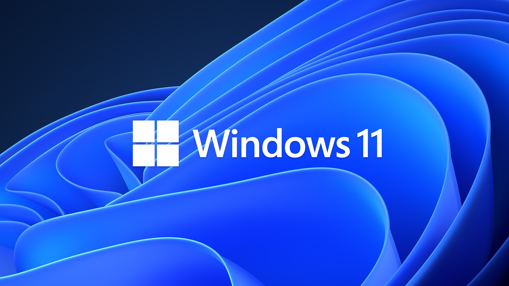

Windows

Windows es el sistema operativo insignia de Microsoft, el estándar de facto para las computadoras domésticas y de negocios. El sistema operativo basado en una interfaz gráfica de usuario (GUI)
fue introducido en 1985 y se han liberado muchas versiones desde entonces.
Linux
Linux® es un sistema operativo open source. En 1991, Linus Torvalds lo diseñó y creó a modo de pasatiempo. Mientras estaba en la universidad, Linus intentó crear una versión open source, alternativa y gratuita del sistema operativo MINIX, que a su vez se basaba en los principios y el diseño de Unix. Ese pasatiempo logró convertirse en el sistema operativo con la mayor base de usuarios, el más usado en los servidores de Internet
disponibles públicamente y en el único utilizado en las 500 supercomputadoras más rápidas.